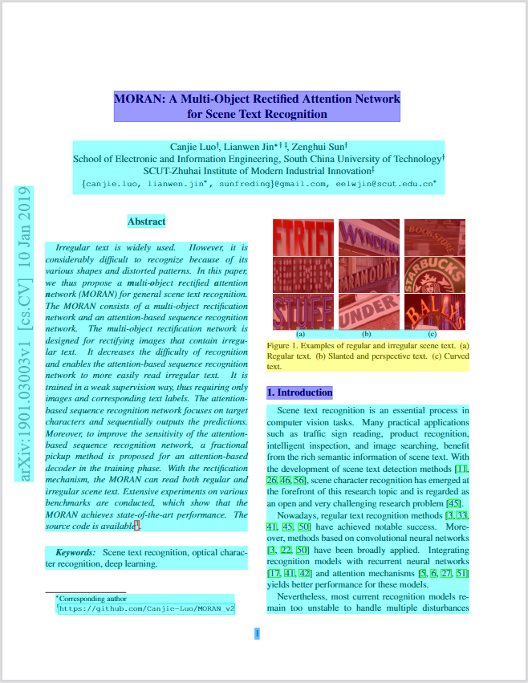
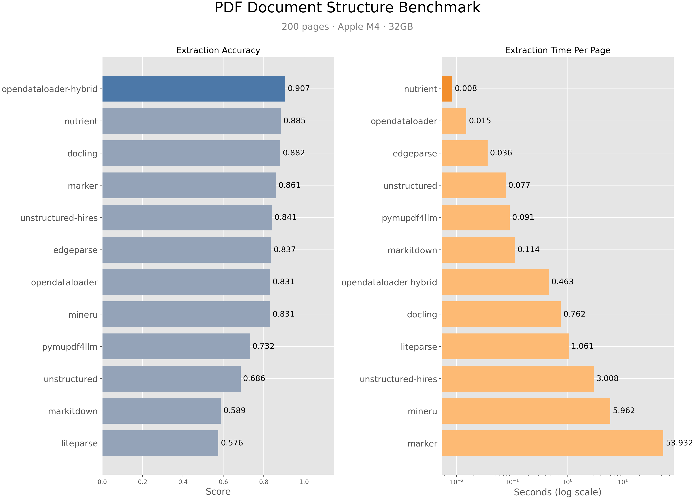
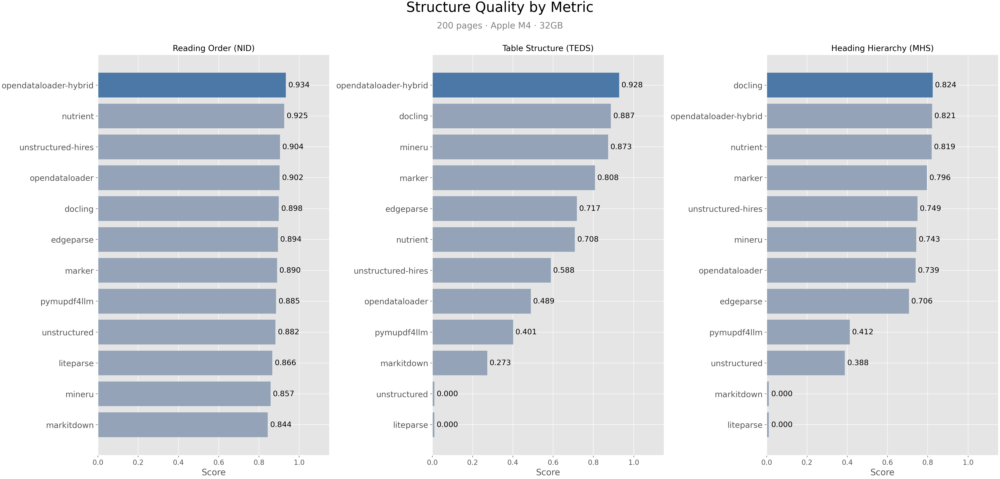

OpenDataLoader PDF：把 PDF 解析和无障碍标注合成一条管线
它不是单纯的 PDF 转文本工具，而是把结构化抽取、坐标级证据、复杂页混合处理、Tagged PDF 自动标注和 PDF/UA 企业导出串成一条产品化链路。对 RAG、合规和大批量文档处理来说，这是一套“先把 PDF 变成可用数据，再把文档变成可访问资产”的方案。

先给结论：它把“可读 PDF”变成“可用 PDF 数据”，再把“未标注 PDF”变成“可访问 PDF”
这张卡最重要的判断是：OpenDataLoader PDF 的价值不在某一个单项能力，而在它把两条常常分开的链路合并了。
如果你要的是给 LLM / RAG 用的结构化 PDF 数据，它输出 Markdown、JSON（带 bounding boxes）和 HTML；如果你要的是无障碍和合规，它能把无标签 PDF 自动标成 Tagged PDF，并把 PDF/UA 导出放到企业层处理。
换句话说：它不是“PDF 转文本”，而是“PDF 数据管线 + 无障碍管线”一体化。复杂页面走 hybrid，普通页面走本地，批处理和可审计性都保留下来。它同时解决两类问题：RAG 的结构化输入，和合规场景的可访问性修复
不是把 PDF 读一遍就结束，而是把“结构保真”与“最终可交付”放在同一个产品里。
给模型和检索系统一个不会乱序的输入
它输出的是带阅读顺序、元素类型和坐标的结构化结果，而不是一串看起来像文本、实则丢了版面的碎片。
- Markdown 用来做 chunking 和上下文拼接。
- JSON 保留 bounding boxes，便于引用回原文。
- HTML / Annotated PDF 用于人工核查和调试。
把未标注 PDF 变成可被屏幕阅读器消费的文档
它先做 layout analysis 和 auto-tagging，再把 Tagged PDF 作为合规链条的基础；PDF/UA 导出和 visual studio 则是企业层能力。
- 适合 EAA、ADA、Section 508 等场景。
- 自动标注是开源核心，PDF/UA 导出是企业加值。
- 强调可验证：与 veraPDF / PDF Association 规范对齐。
资源包里有什么：输出格式、SDK、模式和企业边界都写得很清楚
这不是“一个 parser”，而是一组可以拆开使用的工作单元。
它怎么工作：先本地，再 hybrid，最后把结构送到可访问输出
流程图比口头描述更准确：它的链路核心是“先确定结构，再决定是否上 AI”。
模式怎么选：按文档类型切，不要先猜功能再找参数
README 已经把场景写得很清楚，真正要做的是按文档类型决定用 fast 还是 hybrid。
普通数字版 PDF
优先走 fast 模式，直接 `pip install opendataloader-pdf`，适合大多数结构清晰、文本可选的文档。
复杂或嵌套表格
切到 hybrid：`pip install "opendataloader-pdf[hybrid]"`，让表格和阅读顺序的准确率上一个台阶。
扫描件 / 图片型 PDF
开启 `--force-ocr`，必要时指定 `--ocr-lang`。这条路径主要解决“文本根本不可选”的问题。
公式与图表理解
用 `--enrich-formula` 和 `--enrich-picture-description`，并配合 `--hybrid-mode full` 获取增强输出。
未标注 PDF 的无障碍修复
直接输出 `tagged-pdf`，把未标注文档转成屏幕阅读器可读的结构化 PDF。
PDF/UA 与可视化编辑
当需求是企业合规交付，PDF/UA 导出和 Accessibility studio 才是最终层，而不是开源核心本身。
证据怎么读：它的宣传点集中在“精度、速度、结构保留”三件事
这部分要区分：数值是 benchmark 口径，不是所有真实文档的绝对保证。

▲ Benchmark / 基准对比图
README 里最核心的卖点是 hybrid 模式综合准确率 0.907，table 准确率 0.928；同时本地模式还能保持 0.015s/page 级别的速度。

▲ Quality Breakdown / 质量拆分图
它想证明的不是“单项奇迹”，而是阅读顺序、表格、标题等多个维度同时站得住脚，这对 RAG 和审计都更重要。
最小上手路径：先跑 fast，再决定是否升级到 hybrid
README 的推荐顺序很明确：先确认 Java 11+，再装包，最后根据文档类型决定输出格式。
pip install -U opendataloader-pdf
import opendataloader_pdf
# 批量处理：每次 convert() 都会启动 JVM，别在循环里一页一页调
opendataloader_pdf.convert(
input_path= ["file1.pdf", "file2.pdf", "folder/"],
output_dir= "output/",
format= "markdown,json"
)
# Hybrid / 复杂页、扫描件、公式、图表
pip install -U "opendataloader-pdf[hybrid]"
opendataloader-pdf-hybrid --port 5002
opendataloader-pdf --hybrid docling-fast file1.pdf file2.pdf folder/
# 无障碍修复
opendataloader-pdf --format tagged-pdf file1.pdf file2.pdf folder/
# Node.js / Java 也有入口
npm install @opendataloader/pdf
mvn dependency: org.opendataloader:opendataloader-pdf-core
适合谁 / 不适合谁：它的边界比宣传口号更值得看
这部分决定你要不要上手，也决定你该不该把它当成“万能 PDF 引擎”。
当你要把 PDF 当成结构化资产来处理
- RAG / 检索增强：需要阅读顺序、表格和坐标。
- 合规 / 无障碍：要把未标注 PDF 修成 Tagged PDF。
- 批量文档管线：希望本地优先，复杂页再升级 hybrid。
- 工程团队：想在 Python、Node、Java 之间复用同一套能力。
它不是 Word / Excel / PPT 的通吃转换器
- README 明确写了：Word、Excel、PPT 不在能力范围内。
- 如果你的目标只是“导出纯文本”，它可能比你需要的更重。
- 如果你想完全绕开结构化与坐标，很多能力反而用不上。
- 它也不是一个 UI 编辑器；可视化编辑是企业加值。
最终判断
OpenDataLoader PDF 的核心价值是“把 PDF 的结构和可访问性一起处理”，这让它比单纯 parser 更像一条可交付的数据管线。
一句话边界
如果你要的是结构保真、坐标证据和合规链路，它很强；如果你只要把 PDF 粗暴变成文本，它可能过于完整。